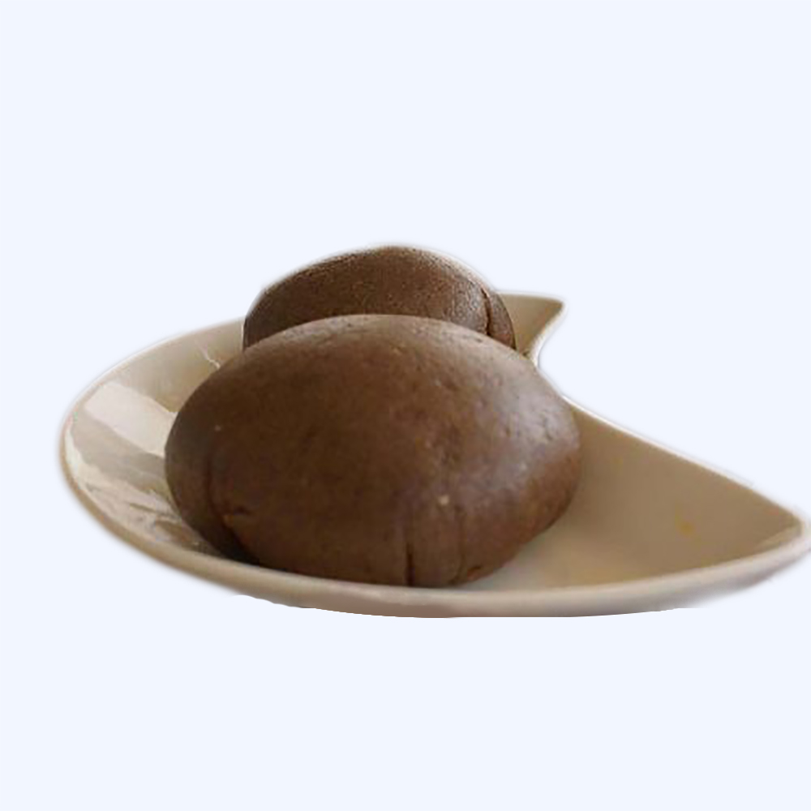
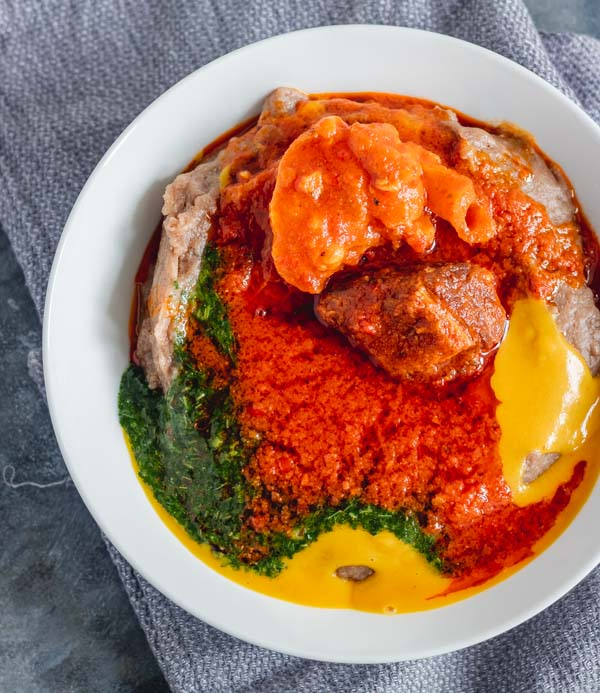
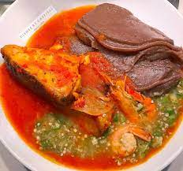
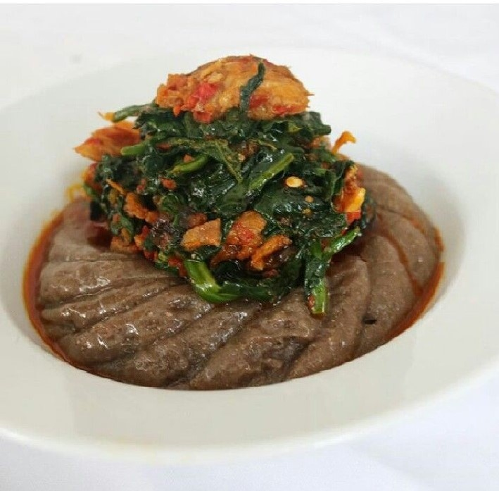
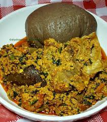
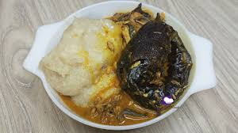

This combination (Amala with Ewedu and Gbegiri) is the most popular combination when it comes to Amala delicacy. Everyone enjoys this combo, it looks nice and taste delicious till the last swallow.

Hot Amala could be swallowed with tantalizing okro soup with lots of assorted to spice it up. The okro could be done seperate but it tastes great when cooked with all the necessary assorted with the pepper, this is generally called "Ila Alasepo" (meaning cooking together) by the Yoruba ethnics.

Eating amala with lots of vegetables supply that energy to keep you moving, it gives that vitamins you need. The oldies love this combination.

Amala with egusi tastes so deliicious while supplying the vitamin, oil and protein needed for body building. You can sprinkle some leaves to the egusi.
Like every other swallow, white amala tastes different from the black amala, its uniqueness make people love it. Can be taken with ewedu and stew or with desired soup.

Not only that the white amala tastes great when taken with ogbono soup but the smell is so fascinating. The ogbono will take the swallow straight down without any stoppage, it's so nourishing.